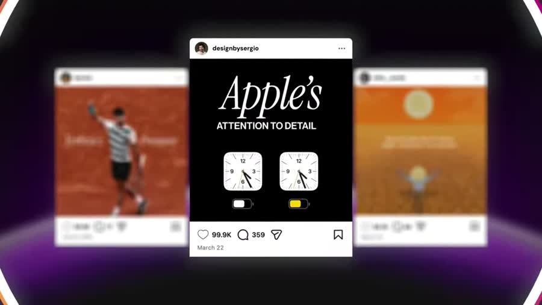
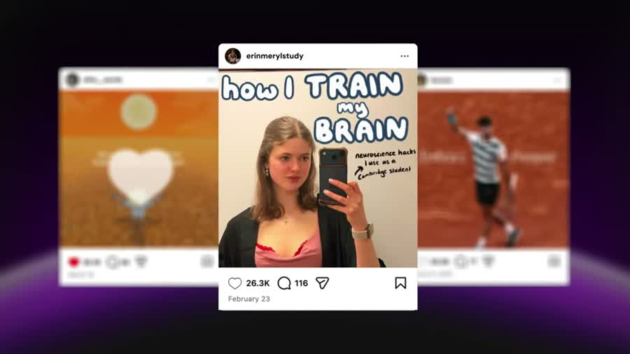
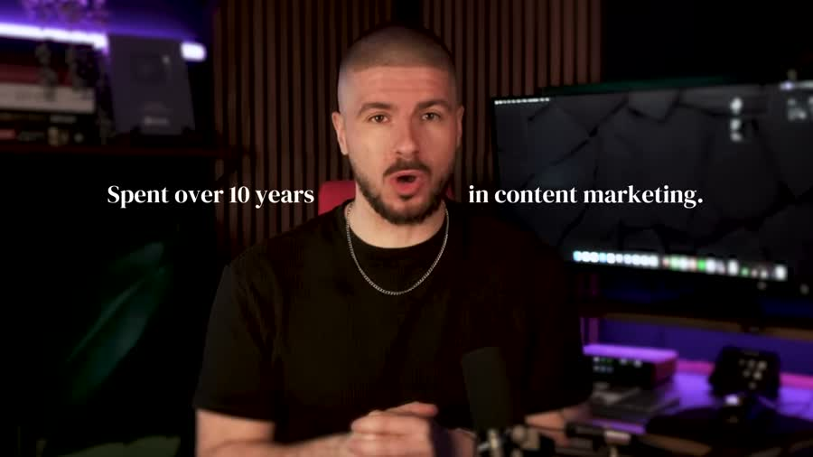
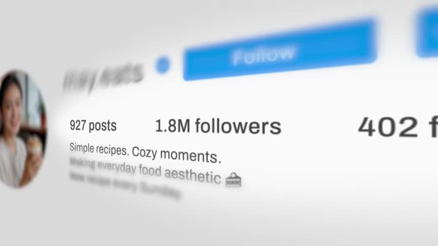
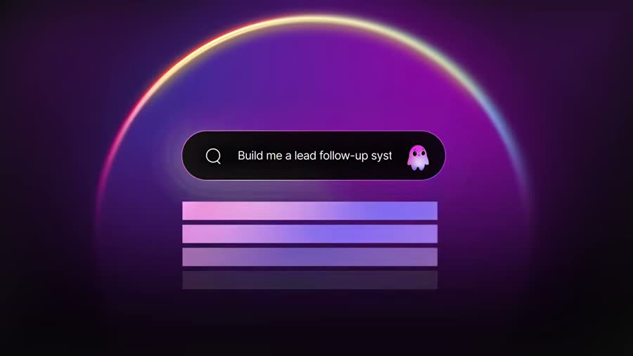
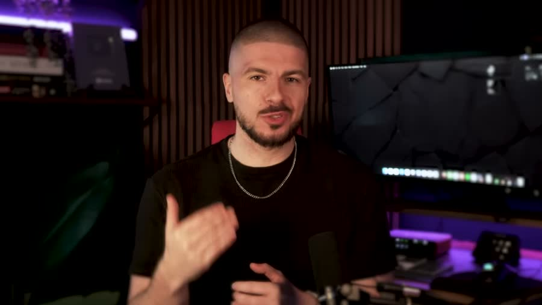
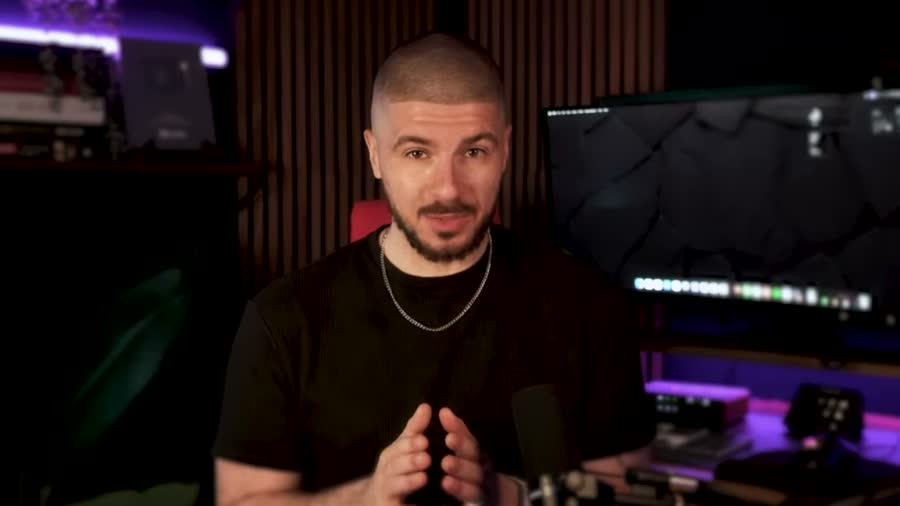
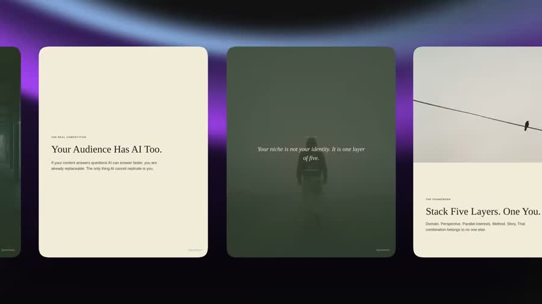
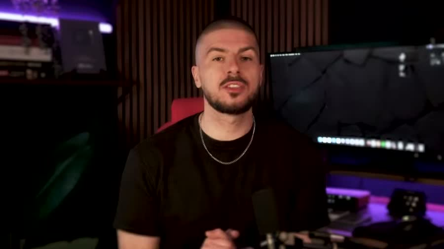
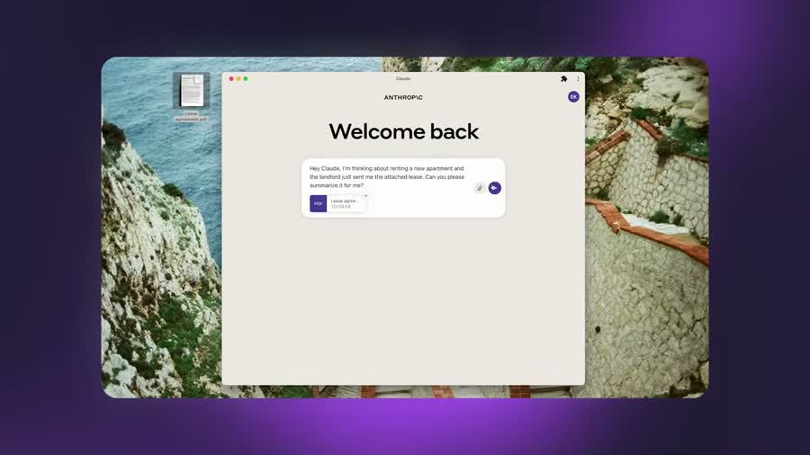

Разбор интро: Grow with Alex, «Claude + Nano Banana. Безумный контент для соцсетей за минуты»
Автор — Алекс, англоязычный блогер про контент-маркетинг; ролик длится 27 минут и собрал
346 тысяч просмотров. Claude — программа-собеседник от компании Anthropic: пишешь ей задание
текстом, она в ответ пишет текст и делает файлы. Nano Banana — рисовалка картинок от Google:
описываешь словами, что нужно, получаешь изображение. Canva, о которой автор говорит
в первой фразе, — редактор картинок, где макеты собирают руками.
Разбирается только интро — первый кусок ролика, где автор ещё ничему не учит, а удерживает зрителя.
Граница интро — 0:46,5. Совпали два признака. Первый: слово-переключатель — «but first,
we need to understand Claude» («но сначала нам нужно разобраться в Claude») и сразу за ним
на 0:48 новый заход «Before I show you anything, I need you to understand Claude»
(«прежде чем что-то показывать, мне нужно, чтобы вы разобрались в Claude»). Автор буквально
повторяет фразу — так помечен стык. Второй: смена времени глагола — до этого «я покажу»,
«мы сделаем», после — «Claude создаёт файлы», «он подключается к вашим программам»,
то есть от обещаний к разбору. Третий признак — обрыв плотности склеек — здесь сработал
в инвертированном виде: до 0:43 склейки идут каждые 2–5 секунд, с 0:43 по 0:56 не было
ни одной, тринадцать секунд одного плана. Не падение, а провал в ноль.
Ролик английский. Слева два слоя: оригинал мелкой строкой и дословный перевод.
Справа — сильный русский: тот же ход автора, пересказанный так, как он работал бы в посте.
Порядок ходов не тронут, ничего не добавлено — только переформулировано.
Фрагмент — первые 47 секунд ролика. Таймкоды в разборе кликабельны: перематывают плеер.
2. Паспорт интро
0:46
длина интро
короче обычных 60–90 с
12
склеек
все до 0:43,5
3,9 с
средний план
до 0:43,5 — плотный монтаж
218
слов в минуту
у англоязычных ютуберов норма 180–200 — это разгон
169
слов всего
за 46,5 секунды
6
мыслей
законченных смысловых блока
0 с
пауза перед крючком
речь начинается с первого кадра
Главное в цифрах: интро идёт 46 секунд, а лицо автора появляется только на 12-й.
Первые двенадцать секунд на экране одни результаты — готовые посты в ленте.
Обещание показано раньше, чем произнесено имя автора. Скорость речи 218 слов в минуту
при английской норме 180–200: за 46 секунд автор укладывает шесть законченных мыслей.
3. Цепочка ходов
Результат сразу, без представления→Отрицание привычного пути: «ни Canva, ни дизайнера»→Доказательство числом: тысячи лайков→Обмен времени: минуты вместо часов→Регалии: 10 лет и бренды→Опись содержимого ролика→Обещание непохожести→Заявка на серию→Показ готовой работы→Переключатель «сначала разберёмся в Claude»
Особенность цепочки — результат идёт первым ходом, регалии четвёртым. Одиннадцать
секунд зритель смотрит на чужие посты с лайками и не знает, кто говорит. Имя, опыт и бренды
подъезжают только после того, как показано, ради чего вообще смотреть. Второй ход из редких —
«ни Canva, ни дизайнера» стоит в первой же фразе: автор называет то, чем зритель
пользуется сейчас, и вычёркивает это раньше, чем предлагает замену. Третий —
двойной показ результата: сначала посты в ленте на 0:00–0:11, потом ещё раз
на 0:34–0:43 уже с оговоркой «это сделано целиком двумя программами».
4. Разбор по мыслям
0:00 — 0:11Результат и отрицание привычного пути219 слов/мин
Оригинал и дословный перевод
Claude and NanoBanana have just changed how I make social media content. Two AI tools, no Canva, no designer, and the results are insane. These posts get thousands of likes time and time again, and they take minutes, not hours, to make.
Claude и NanoBanana только что изменили то, как я делаю контент для соцсетей. Два ИИ-инструмента, никакой Canva, никакого дизайнера, и результаты безумные. Эти посты получают тысячи лайков раз за разом, и на них уходят минуты, а не часы.
14,0 слова в предложении · 42 слова / 3 предложения
Сильный русский
Картинки для соцсетей я больше не заказываю. Ни дизайнеру, ни в редакторе Canva.
Их делают две программы: Claude и Nano Banana.
Посты выходят такие, что собирают тысячи лайков. Раз за разом.
На один пост уходят минуты, а не часы.
6,5 слова в предложении · 39 слов / 6 предложений

0:02 — вместо лица автора лента постов. Обещание показано картинкой раньше, чем произнесено словами.

0:07 — карточки листаются под речь: на каждый пост виден счётчик лайков. Слово «тысячи» подтверждено цифрой на экране.
Now, I've spent over 10 years in content marketing and built multiple social media brands. And now, I'm using AI every single day to build systems that actually work.
Так вот, я провёл более 10 лет в контент-маркетинге и построил несколько брендов в соцсетях. И теперь я использую ИИ каждый божий день, чтобы строить системы, которые действительно работают.
15,5 слова в предложении · 31 слово / 2 предложения
Сильный русский
Десять лет я делаю контент за деньги. За это время поднял несколько брендов в соцсетях.
Теперь беру для этого ИИ. Каждый день.
Собираю на нём схемы работы, которые не рассыпаются.
6,0 слова в предложении · 30 слов / 5 предложений

0:13 — регалия вынесена титром поверх кадра: «Spent over 10 years in content marketing». Число подтверждено буквами, а не только голосом.

0:16 — «несколько брендов» показаны счётчиком чужой страницы: 1,8 млн подписчиков, 927 постов. Слова «несколько брендов» получили конкретный размер.
In this video today, I'm going to show you exactly how I use Claude and NanoBanana to turn my own content into social media posts that look like nothing else out there.
В этом видео сегодня я собираюсь показать вам в точности, как я использую Claude и NanoBanana, чтобы превращать мой собственный контент в посты для соцсетей, которые не похожи ни на что другое там снаружи.
33,0 слова в предложении · 33 слова / 1 предложение
Сильный русский
Сегодня показываю сам ход. Целиком, без пропусков.
Как я беру свой уже готовый материал.
Как из него получаются посты для соцсетей.
И почему эти посты не похожи ни на что вокруг.
6,2 слова в предложении · 31 слово / 5 предложений

0:18 — строка задания «Build me a lead follow-up system» набирается на экране под речь. Работа показана в момент, когда о ней говорят.

0:23 — говорящая голова возвращается ровно на обещании. Лицо появляется там, где нужно доверие, а не там, где нечего показать.
Before I break anything down, let me show you exactly what we're making today. This was all made entirely with Claude and NanoBanana. My content, my brand, custom visuals.
Прежде чем я что-либо разберу, позвольте показать вам в точности, что мы делаем сегодня. Это всё было сделано целиком с помощью Claude и NanoBanana. Мой контент, мой бренд, индивидуальные визуалы.
10,0 слов в предложении · 30 слов / 3 предложения
Сильный русский
Сначала результат, разбор потом.
Вот что мы сделаем сегодня.
Всё, что сейчас на экране, собрано двумя программами.
Мой текст. Мой стиль. Картинки нарисованы под меня.
4,2 слова в предложении · 25 слов / 6 предложений

0:36 — карточки выезжают одна за другой: «Your Audience Has AI Toxo», «The Algorithm Changed». Показан не один пост, а набор в одном стиле.

0:41 — тот же набор целиком в кадре. Слова «мой стиль» подтверждены одинаковым оформлением всех карточек.
And I'm going to show you every step, but first, we need to understand Claude. // Дальше, уже за границей: Before I show you anything, I need you to understand Claude, because this isn't just another AI tool. Let's break it down.
И я собираюсь показать вам каждый шаг, но сначала нам нужно разобраться в Claude. // Дальше: Прежде чем я вам что-то покажу, мне нужно, чтобы вы разобрались в Claude, потому что это не просто ещё один ИИ-инструмент. Давайте разложим.
16,0 слов в предложении · 16 слов / 1 предложение
Сильный русский, дальше — что изменилось
Покажу каждый шаг по порядку. Но сначала разберёмся, что такое Claude.
Обещания кончились, начался разбор устройства программы.
Дальше идут её три части: чат, работа с рабочим столом, работа в терминале — и по каждой примеры, что она умеет.
5,5 слова в предложении · 11 слов / 2 предложения

0:49 — тот же план, что и на 0:43: с 0:43,5 до 0:56 нет ни одной склейки. Тринадцать секунд статики после монтажа по 4 секунды.

0:56 — первая запись экрана после интро: окно программы Claude. Началась основная часть.
5. Пост — весь заход связным текстом
Я перестал заказывать картинки для соцсетей. Их делают две программы
Картинки для соцсетей я больше не заказываю. Ни дизайнеру, ни в редакторе Canva.
Их делают две программы: Claude и Nano Banana.
Посты выходят такие, что собирают тысячи лайков. Раз за разом. На один пост
уходят минуты, а не часы.
Десять лет я делаю контент за деньги. За это время поднял несколько брендов в соцсетях.
Теперь беру для этого ИИ. Каждый день. Собираю на нём схемы работы, которые не рассыпаются.
Сегодня показываю сам ход. Целиком, без пропусков. Как я беру свой уже готовый материал.
Как из него получаются посты для соцсетей. И почему эти посты не похожи ни на что вокруг.
Это первый выпуск. Дальше будет серия. В ней я соберу всю работу
с соцсетями на ИИ целиком.
Сначала результат, разбор потом. Вот что мы сделаем сегодня. Всё, что сейчас на экране,
собрано двумя программами. Мой текст. Мой стиль. Картинки нарисованы под меня.
Покажу каждый шаг по порядку. Но сначала разберёмся, что такое Claude.
6. Тезисы пулями
Дизайнер и редактор картинок больше не нужны
Ни человека на подряде, ни ручной сборки макетов в Canva — всё делают две программы.
Посты собирают тысячи лайков — и не один раз, а раз за разом
Повторяемость названа отдельно: это не единичная удача.
На один пост уходят минуты вместо часов
Обмен назван прямо: то же самое время, но в другой единице измерения.
За автором десять лет платной работы с контентом
И несколько поднятых брендов в соцсетях — на экране счётчик страницы с 1,8 млн подписчиков.
Исходник для постов — свой уже готовый материал
Ничего не сочиняется с нуля: берётся то, что автор уже написал и снял.
Готовые посты показаны до объяснений
Сначала результат на экране, разбор шагов — после него.
Это первый выпуск серии
Дальше собирается вся работа с соцсетями на ИИ целиком.
7. Что видно по картинке
Лицо автора появляется только на 12-й секунде. Первые одиннадцать секунд —
чужие и свои посты в ленте с видимыми счётчиками лайков. Зритель сначала видит,
ради чего смотреть, и только потом — кто говорит.
Регалия написана буквами. На 0:13 поверх кадра титр «Spent over 10 years
in content marketing». То же самое произносится голосом — цифра заходит дважды.
«Несколько брендов» подтверждены счётчиком. На 0:16 в кадре страница
с 1,8 млн подписчиков и 927 постами. Расплывчатое слово получило размер.
Работа показана в момент, когда о ней говорят. На 0:18 и 0:26 в кадре
набирается строка задания программе. Текст задания меняется — видно, что примеров несколько.
Заставка серии оформлена как титул сериала. На 0:31 «Episode 1. The Claude
Social Media Series». Обещание продолжения закреплено картинкой, а не только словом.
Единство стиля показано набором, а не одним постом. На 0:36–0:43 карточки
выезжают одна за другой и остаются в кадре вместе. Слова «мой стиль» проверяемы глазами.
Монтаж останавливается ровно на границе. До 0:43,5 склейка каждые 4 секунды,
с 0:43,5 до 0:56 — ни одной. Тринадцать секунд статики отделяют интро от разбора.
Говорящая голова занимает меньше трети интро. Из двенадцати планов
восемь — записи экрана, ленты постов и заставки.
8. Что заменено в русской версии и почему
«have just changed how I make social media content» → «Картинки для соцсетей
я больше не заказываю». Отвлечённое «изменили то, как я делаю» заменено конкретным
действием, которое пропало из жизни автора.
«Two AI tools» → «две программы: Claude и Nano Banana». Термин «ИИ-инструмент»
ничего не показывает; «программа» с именами — показывает.
«the results are insane» → вырезано, вместо оценки оставлены факты:
тысячи лайков и минуты вместо часов. «Безумные результаты» увидеть нельзя.
«time and time again» → «Раз за разом» отдельным предложением.
Повторяемость — самостоятельный аргумент, в хвосте длинной фразы он терялся.
«systems that actually work» → «схемы работы, которые не рассыпаются».
«Системы, которые действительно работают» — оценка; «не рассыпаются» — проверяемое свойство.
«turn my own content into social media posts» внутри фразы на 33 слова
→ три коротких предложения: беру готовый материал / получаются посты / не похожи
ни на что вокруг. Ход автора сохранён, длина предложения упала втрое.
«the ultimate AI social media system» → «всю работу с соцсетями на ИИ целиком».
Превосходная степень «окончательная система» заменена описанием охвата.
«Before I break anything down» → «Сначала результат, разбор потом».
Придаточное превращено в короткое утверждение о порядке.
Средняя длина предложения упала во всех блоках: с 10,0–33,0 слова до 4,2–6,5.
По всему интро: 15,4 слова у автора против 5,7 в пересказе — почти втрое короче.
Объём содержания не срезан: 169 слов оригинала против 153 в русской версии, это 91%.
Цепочка ходов не менялась — результат, отрицание привычного пути, доказательство лайками,
обмен времени, регалии, опись содержимого, заявка на серию, показ работы остались на своих местах.